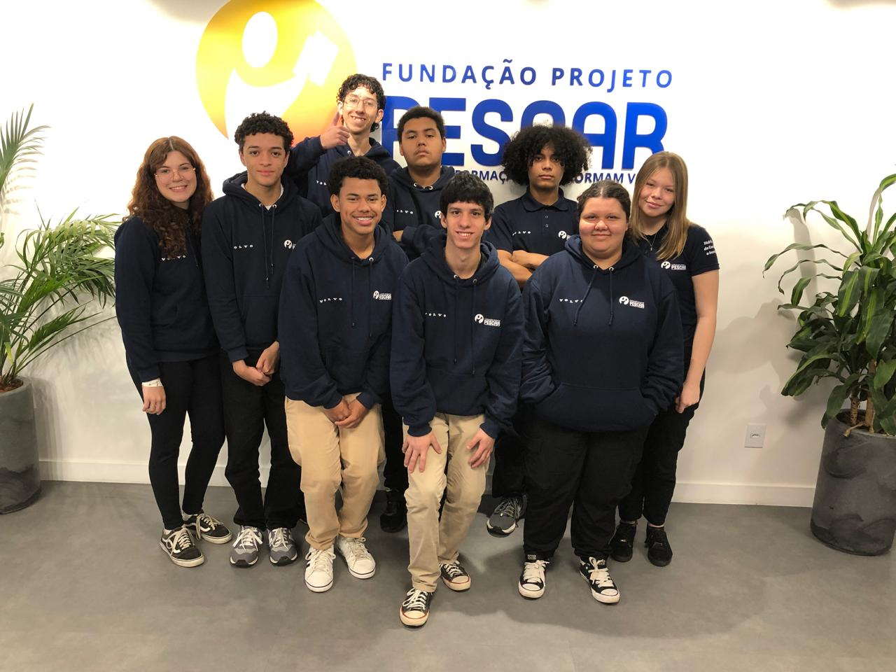

O TEC - Pescar é um site criado pela turma de Tecnologia da Informação do Projeto Pescar, com o objetivo de apresentar nossa trajetória, conquistas e aprendizados ao longo do curso.
Aqui, mostramos como a formação técnica e o trabalho em equipe podem transformar jovens em profissionais prontos para o futuro.
